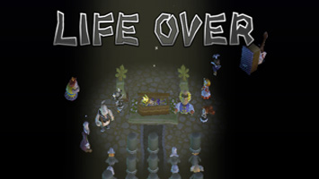
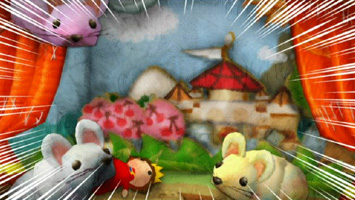
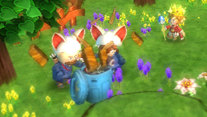
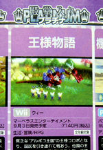
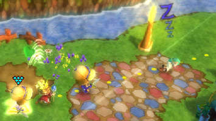
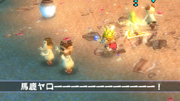
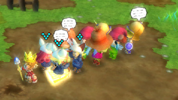

おはこんばんちくわ。
リードプランナー兼シナリオ兼のんきな池田トムです。
とうとう後３日ですよ。
ジャックバウアーは２４時間。エディーマーフィーは４２時間
がんばってたことですし、７２時間なんて無理すれば不眠で
迎えることだってできますネ！
うおーーー興奮して鼻血出てきた。
ということで、今日は出血大サービス。
ブログを見て頂いた皆様が、他より１ランク違うレベルで
快適プレイができるよう、ここだけの裏テクニックプレイを
「１行ヒント」で伝授してやろうじゃないですか(汗)
プリントアウトしてゲームを遊べばいいじゃないですか(怒)
知ってる知ってる？って自慢しちゃえばいいじゃないですか(涙)
ﾋﾐﾂLv.)
★☆☆①カネが欲しけりゃ、毎朝浜辺の流木やツボを壊せ！
★☆☆②敵の頭に「プンプン」が出たら、Ｂボタンでタイキャク！
★★☆③人口を増やせば、便利な王国プランが続々出るぜ！
★★☆④国外では、メニュー→②ボタン一発でお城に帰還可能だ！
★★★⑤だまされたと思って農村「はずれの家」にトツゲキしてみ！
★★★⑥ＬＰが低い弱キャラは「のんきな岩」にぶつけて再就職！
★★★⑦全クリしたら………………！！
ぜーはーぜーはー…
クソッ！もうマー●ラスから追っ手が来やがったか…！
あ、あの顔には見覚えがある…。Ｐ、ＰＲ大臣……！？
（しゅるるるる～）
（グサッ！）
アウチッッ
…ブログの前の皆様、ちょいと…無理をしすぎたようだ。
どうやらおいどんはここまでのようじゃけん…。
今まで…ありがとうっ……王様物語…よろし…く……！
～FIN～ 
おはこんばんちわわ。
リードプランナー兼シナリオ兼したっぱの池田トムです。
今日は少し真面目気味に王様物語をアピールをしますので、
最初に１発ダジャレをお見舞いして全体のバランスを取ります。
えー、「1970年代の日本危機」とかけまして、
「王様物語の世界では残りのLP(ライフポイント)が
1になると老人になってしまうのだ！」と解きます。
そのココロは！？
これがホントの『老いるショーーック』！
はい。
ところで、王様物語のジャンルはただのＲＰＧではなくて、
「王国ワラワラＲＰＧ」です。
そのワラワラたるやそこらのゲームの非ではないのです。
中でもライフシミュレーションは安永さん、御姓さん仰るとおり、
最後の最後まで個性と生活感を出すため、様々な行動と
アクションを盛り込んでくれました。
お城中を悠々自適に徘徊する３匹のネズミたち。
記録大臣ヴェルデはネズミに囲まれるとてんやわんやですが、
それを、なんでも大臣リアムが得意げに追い払う。
※チューチュー！（みてんじゃねぇ！） 
ゲームの主たるルーチンワークからは幾らか外れた
これらの観察的な遊びですが、各キャラクターの
個性表現の為、実に大事な一角を担ってくれています。
その恩恵の１つが、強制的に見せられる長いイベントの
排除に繋がっています。
王様物語には、長いイベントがほぼありません。
極限まで削りに削って、快適に遊べるように設計しました。
それでも、キャラクターはそれぞれ個性を出せています。
これこそ『百聞は一見にしかず』理論。
語らずとも行動で表現できている点が生きているのです。
続いて、トツゲキ後のリアクション。
田村さんが語ってくれたようにたくさんの種類が用意されています。
どうぞ王国を歩いて、国民をトツゲキさせまくってください。
オススメは「徴収」と「ゴミあさり」。
民家にトツゲキさせることで、国税を「徴収する」ことができます。
いわゆる敵と戦う経験値稼ぎの代わりに、王国をみまわることで、
”王様らしく”お金を稼ぐことができるのです！ラッキー
王国をみまわる途中、ゴミ箱をみつけたらトツゲキさせてみましょう。 
もうそれは豪快にゴミをあさってくれま～す。
しけもく、ガムの銀紙、おれた傘、破れたパンツ等など、
国民の生活感あふれるゴミが見つかるでしょうし、
中にはチョーレアアイテムも見つかるかもしれません！？
とにかく色々ためしてみてくださいな。
見ているだけでも楽しいキャラクターの反応が、
何かモノを得られることで、更に楽しくなる。
王国を発展させれば、より色々反応できるものが増えるので、
一層次のステップを目指したくなる。
王様物語は、
このようにモチベーションがどんどん高まっていくゲームです。
…って、なんかしゃべってたら無性に遊びたくなってきた。
うおー！発売はまだか！まだなのかー！！！
（ぴんぽーん。あと５日ほどまってください～）
こんにちは、ＰＲ大臣です。
プランナー兼相棒の、池田トムです。
本日はこの二人の夢のような（現実的ではない）コラボにてお届けします。
ＰＲ大臣したたる汗をぬぐいながら、
大臣「池田サン、大変なことになりました。」
トム「…ですか。早いこと出頭して下さい。」
大臣「シャバの空気もしばらくはお預けか…ってバカッ！
罪は犯していません！コレのことですよ！」
おもむろに腹巻に手を突っ込んで、8/27発売「週刊ファミ通」を
取り出すＰＲ大臣。
※ま…まばゆい高評価っ！ 
大臣「新作ゲームクロスレビュー、『王様物語』プラチナ殿堂入り！
いやっほー夢のようだなぁ～。」
突然アイスコーヒーをＰＲ大臣の顔にぶっかけるトム。
トム「ばっきゃろう！！
これは夢じゃない、現実だ！！」
大臣「エエー……この人コワい。」
両手をカッと大きく広げ、一筋の涙を浮かべるトム。
トム「…とにかく、おめでとう！」
大臣「おめでとう！」
腹巻を脱ぎ捨て、裸で抱き合う二人。
世は更け……そして、世界は新たな朝を迎えた。
一方その時、8/27発売「週刊ファミ通」には他にもオモシロ記事満載！
「ファミ通編集部激薦グッジョブゲーム」２ページでは
サンフランシス小山さんと高月堂さんによる、王様物語の本質に
迫る記事を展開頂きました！ とても読み応えあります～！
「いちご組」２ページではジョブ特集が掲載されていますよ！
チョ～楽しげ攻略本「10月発売」予定ですよ～。メモメモ！
それではまた！
みなさま、初めまして。
プログラム担当の田村佑樹と申します。
王様物語とは私が学生の時から関わらせていただいて、
かれこれ１年半のお付き合いになりました。
主な担当プログラムは、引き連れNPCの動きや、
王様のアクション、メニューなどのUIです。
さてさて、NPCに深く関わった私。
こだわった所などを色々と話したいと思います～。
まずは、『打ち出し』アクション！
王様が、まるでシューティングの弾のように
引き連れたNPCたちを打ち出すアクションです。
プレイヤーがもっとも良く使うアクションですので、
どうしたら気持ちよく打ち出すことができるだろうか？
と、木村さん、トムさん、長沢さんとともに、
色々と思考錯誤をしたものです。
まず敵を正確に狙うためのロックオン機能ですが、
当初はかなり強力に、
敵をロックオンするようになっていました。
しかし、移動が不自由になってしまうという
デメリットがあったのです。
そこで思考錯誤して生まれたのが『微弱ロック』！
移動はスムーズで、
敵をいい感じに狙い打つことができるのです！
ぜひプレイして感触を確かめてくださいな～。
※ウララ ウララ ウラウラよ～♪ってな感じで狙いうちッ 
そして、打ち出してからのNPCの挙動！
彼らには様々なジョブがあり、
それぞれに違うリアクションを見せてくれるでしょう。
是非、いろんな物や所に
NPCたちを打ち出してみてください！
※浜辺に向かって「馬鹿ヤローー！！」 
キモチはわかる…。わかるよ、タムさんッ！！(ﾄﾑ)
そしてそして、引き連れているNPCたち。
そのまま放置してみましょう………。
なにもしないでいることに退屈したのか、
隣のNPCと会話したり、体操したり、
ウトウト居眠りしたり。
※「ねぇねぇ知ってる？王様ＴＶにすごいゲスト登場だってさ！」 
実はここ、そこまで細かい指定がなかったので、
私のアレンジでいっぱいです！
力いっぱい作らせていただきました♪
こんな感じで、
どんどん生き生きしていくNPCたち！
作れば作るほど面白くなっていくゲーム！
早くやりたい製品版！
『王様物語』は、ほんと楽しいゲームなのです。
どうぞよろしくお願いします～！
みなさま、
こんにちは、こんばんは、おはようございます。
プログラマーの御姓智宏です。
前回は『開発時期の思い出』を書かせていただきましたが、
今回は王様物語の要素の一つ、『国民』にスポットを当てて、
（プログラム成分多めで）書かせていただきます。
このゲーム、最初は、野っぱらだけの王国ですが、
王様（このブログをご覧の『あなた様』です！）の命令ひとつで、
空き地だった場所に、たてものが建ちます。
そうなると、その空き地を歩いていた村人は、空き地だった場所を
移動することができなくなってしまいます。
さて、どうする！？
一般的なゲームだと、キャラクターが移動する場所というのは、
「開発者があらかじめ決めておき、その範囲内で移動させる」のですが、
このゲームでは、その方法が使えないのです。
（厳密にいうと、「できないことはない」のですが、
解決しなければいけない問題が、たくさんあって『難しい』のです。
本編では、本当にたくさんのジョブが存在しますしね！）
そこで今回使った処理が、経路探索というアルゴリズムです。
『目的地までの通り道を、その場で作ってしまえ！』
というノリの処理なのですが、国民がやたらと多い！
もちろん、国民一人一人が歩きまわるので、
ぶっちゃけ、負荷がかかるし、メモリを使ってしまうのです。
開発後期になって、木村さん、安永さんを交えたミーティングで出た
「ゲームならではのトリック」の発想転換によって、
この大問題が解決できたときは、
「ゲーム開発は、面白いなぁ～」と、改めて感じた瞬間でした。
※彼らがいちゃいちゃできるのも、孤独なクリエイター達の力なのです！
キモチはわかります…。わかりますとも、御姓さんッ！！(ﾄﾑ)
さて、話はちょっぴり変わりまして、国民たちの行動には、
王国内での『生活』とは別に、王様が引き連れてからの
『親衛隊』としての行動があります。
そこで明日は、プログラマー田村君にここらへんの行動について
お話を語ってもらおうと思います。
彼は本作がデビュー作品にも関わらず、国民の『親衛隊』アクション部分や
ＵＩをつくったり八面六臂の活躍をした期待の若手なのです。
お楽しみに～。
★その他 アピール
紙面やネットでは伝わりにくい『ロードの待ち時間』ですが、
ひじょーに、気を使っています。
ストレスなく遊んでもらえると思いますので、
どなた様にもご満足いただけるはず！本編をご堪能下さい～！


 クリエイターズBLOG トップ
クリエイターズBLOG トップ